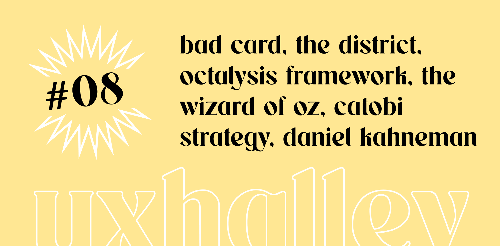

UX Halley, newsletter per designer
uxhalley, edizione #08
16 gennaio 2023 — UX Halley: una newsletter bisettimanale che raccoglie news e links utili sulla UX. Le regole sono semplici: max 5 minuti di lettura; se ti interessa, lo approfondisci; se ti piace, lo condividi; a prescindere ci vediamo tra due settimane. Facile facile.
Immagine di copertina dell'edizione di UX Halley, newsetter per designer
Link per designer suggerito nell'edizione di UX Halley, newsletter per designer
il mago di OZ
Saper validare un progetto digitale, un'idea di business, è una skill davvero importante. Almeno sapere come si fa e quali sono i metodi più conosciuti è d'obbligo. Qui uno dei metodi di validazione, raccontato da Nielsen Norman Group, ovvero quello che viene chiamato Mago di OZ.
Link per designer suggerito nell'edizione di UX Halley, newsletter per designer
octalysis framework
Yu-kai Chou, autore di Actionable Gamification, ha definito un framework che si basa su 8 step / princìpi che permette di progettare e approfondire il tema del coinvolgimento in un prodotto / business digitale. Se ti occupi di progettazione non puoi almeno non saperne.
Link per designer suggerito nell'edizione di UX Halley, newsletter per designer
the district
Cerchi lavoro? Cerchi un supporto per trovare lavoro? Cerchi una community? the-district.com è sicuramente qualcosa che devi conoscere. Ho avuto il piacere di scambiare due parole con Hassan Nasser, co-founder di The District, e sicuramente posso dire che non è soltanto un posto in cui cercare lavoro.
Link per designer suggerito nell'edizione di UX Halley, newsletter per designer
conosci sara?
Io no, almeno non di persona, ma devo ammettere che è molto brava ed ha un seguito importante. Sara Brunettini è una product designer, che attualmente lavora da Meta e crea contenuti davvero interessanti e genuini, che meritano l'attenzione di chi vuole sviluppare le proprie competenze con naturalezza.
Link per designer suggerito nell'edizione di UX Halley, newsletter per designer
catobi strategy
Un luogo di innovazione pura, un progetto che vuole portare conoscenza e distribuire competenza. Ecco cosa vedo in Catobi, e dopo aver conosciuto Carlo Tommaso Bisaccioni e l'energia che mette in quello che fa posso solo che confermarlo. Ti consiglio di seguire Remarks, la newsletter settimanale.
Link per designer suggerito nell'edizione di UX Halley, newsletter per designer
cervello 1 e cervello 2
Daniel Kahneman è un must nella libreria di ogni persona che vive e lavora nel mondo del design. Il suo iconico libro, dal nome in Italiano "Pensieri lenti e veloci" è un testo complesso, lungo ma importantissimo. La conosci la storia del fatto che abbiamo due cervelli? Se ti incuriosisce non puoi non approfondire.
Link per designer suggerito nell'edizione di UX Halley, newsletter per designer
business aware design
Avrai sicuramente sentito parlare delle carte Fabula, create da Sefirot Independent Publisher e da Matteo di Pascale. Ecco, oggi esce ufficialmente un nuovo prodotto veramente interessante: delle carte, e non solo, che ti permettono di progettare il concetto di "business" di un prodotto.